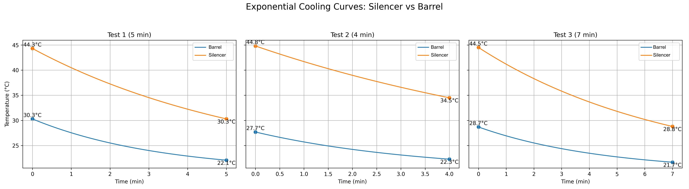

Rapid Barrel Recovery
Directional airflow pushes cool air straight down the bore, stripping heat soak and stabilizing Point of Impact (POI) faster than passive cooling alone.
ThermoX Barrel Cooler is the leading rifle barrel cooling system and gun barrel fan for shooters, hunters, and competitors in South Africa. Rapidly cool your AR-15, bolt-action, or tactical rifle barrel and eliminate heat mirage, barrel warping, and accuracy loss. Trusted by precision shooters and match competitors.
Range mode: perfect for zeroing days and casual sessions where you don’t want to babysit a hot barrel.
R1265 ZAR
Online ordering now available
Every detail of ThermoX is tuned for shooters who burn ammo, not time. Barrel cooler technology for the modern range.
Directional airflow pushes cool air straight down the bore, stripping heat soak and stabilizing Point of Impact (POI) faster than passive cooling alone.
Compact profile slides into your range bag and charges from any USB‑C pack or wall adapter.
Smart airflow design keeps the fan quiet, so target impacts stay loud and clear.
Rugged 3D-printed polymer body engineered with reinforced structures, tactile grip surfaces, and sealed electronics for harsh range environments.
ThermoX pulls cool ambient air in through the intake, pushes it through a high‑CFM turbine, and directs that airflow straight into your chamber or down the bore. This speeds up how fast the steel can dump heat.
Works with most modern AR and precision rifle platforms that have a clear path to the chamber or bore.
Cool air pulled in → driven by turbine → forced down the bore to strip heat.

Real feedback from the line.
“Barrel temps drop fast enough that I’m not killing time between groups anymore. My data is way more consistent.”
“Perfect for training days. Keeps my duty rifle from cooking while I’m running students through drills.”
“Small, tough, and actually useful. Lives in my range bag now.”
Yes. ThermoX is a purpose-built barrel cooler and gun barrel fan for rifles. It rapidly cools your barrel between strings, reducing heat mirage and improving accuracy.
ThermoX fits most AR-15, AR-10, and bolt-action rifles. It is the best barrel cooling system for .223, .308, 6.5 Creedmoor, and more.
A barrel cooler or gun barrel fan helps prevent barrel overheating, mirage, and accuracy loss. ThermoX is trusted by match shooters and hunters for fast, reliable cooling.
Yes. It’s designed to be quiet and low‑profile, perfect for indoor ranges or training spaces.
We stand behind ThermoX with a 3-month limited warranty and lifetime support.
Real strings. Real mirage. See how fast ThermoX gets you back on target.
Secure ThermoX online ordering is now available. Click Order Now to start your order, or contact us at thermox.service@gmail.com or WhatsApp.